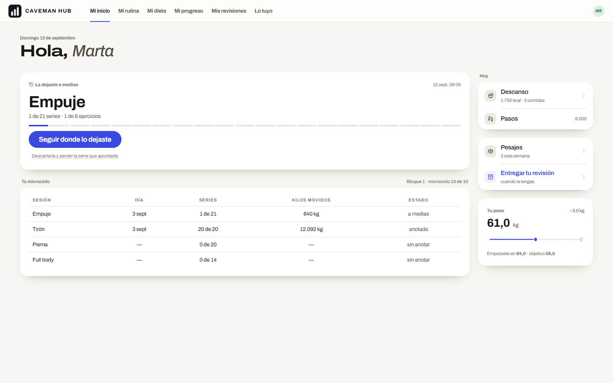
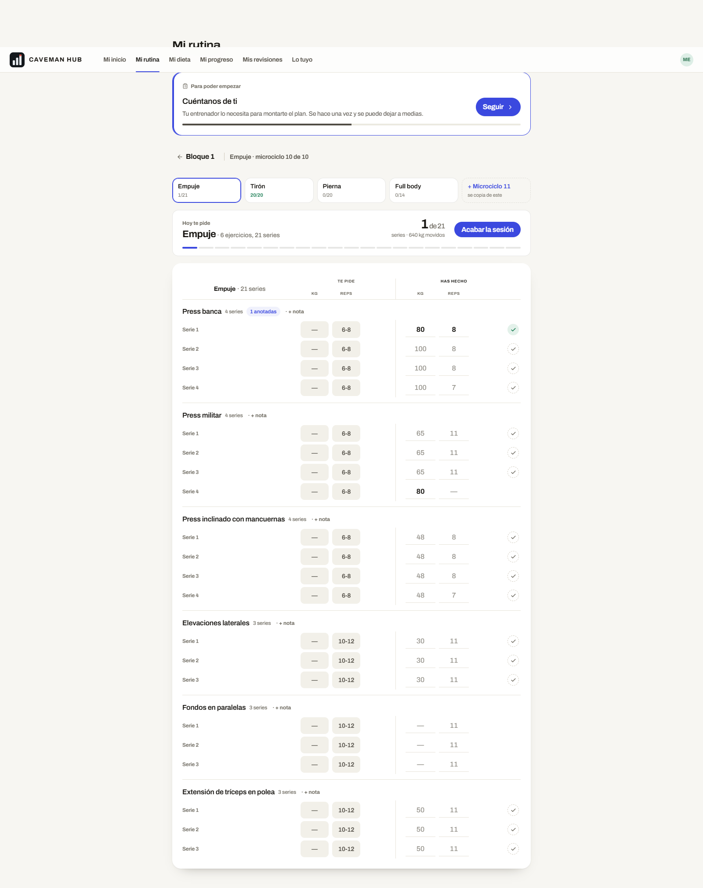
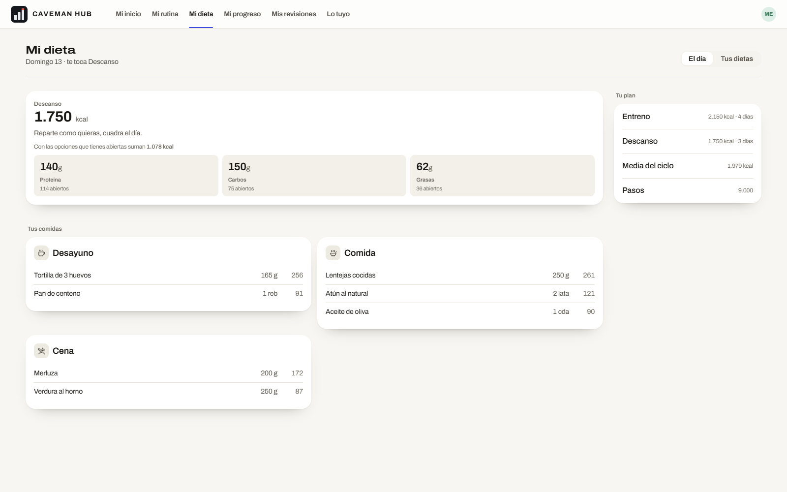
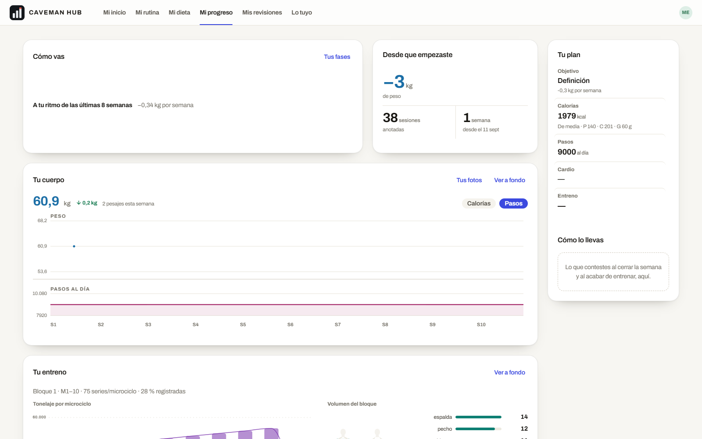
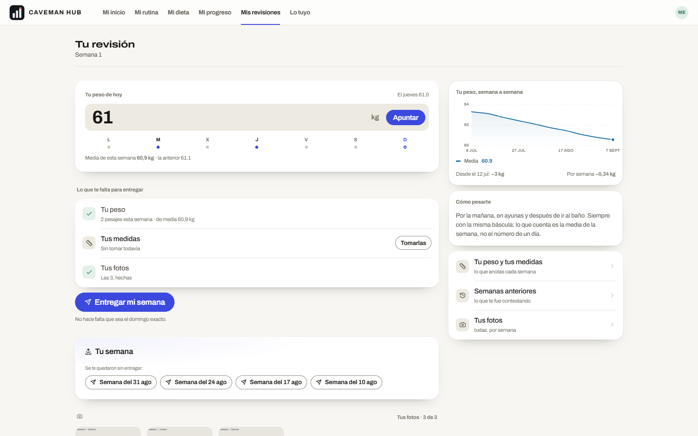
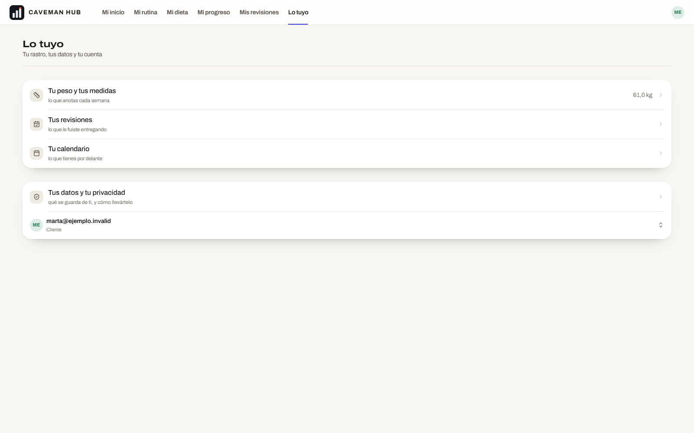
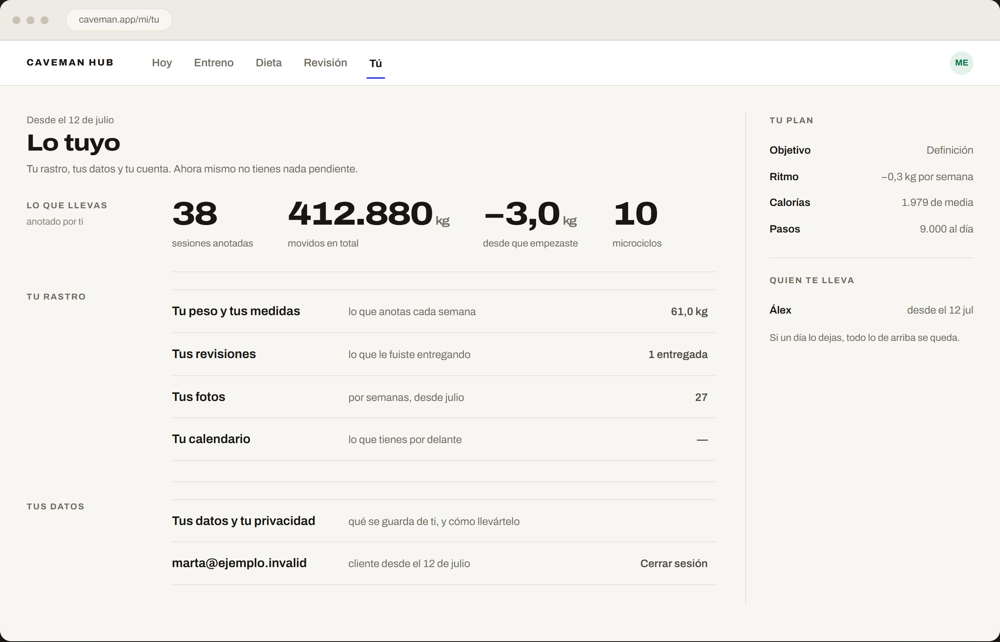

El teléfono ya es otro aparato y está resuelto. El PC no: es la misma app con los muebles del teléfono puestos en una habitación cuatro veces más grande. Esto no propone pantallas nuevas ni destinos nuevos ni una paleta nueva. Propone una sola cosa: qué es una página.
Lo que sigue en pie del estudio del 13 de septiembre: la tesis (tu historial es el producto), las tres leyes y el teléfono entero. Lo que cae es su PC —la parrilla de diez microciclos y la frase «el PC compara»—, rechazado. Aquí la premisa es la contraria y más aburrida: el PC no hace nada distinto; hace lo mismo mejor puesto.
Medido el 14 de septiembre con la cuenta de cliente de la demo local (marta@ejemplo.invalid), en un monitor de 1600 × 1000 y con el movimiento desactivado. No es una impresión: es el chasis real.
| Pantalla | Ancho | Empieza en | Cajas | Última tinta |
|---|---|---|---|---|
| Mi inicio | 1560 | 20 | 5 | 765 de 1000 |
| Mi rutina | 880 | 360 | 3 | 2018 |
| Mi dieta | 1560 | 20 | 8 | 875 |
| Mi progreso | 1560 | 20 | 6 | 1544 |
| Mis revisiones | 1320 | 140 | 7 | 1276 |
| Lo tuyo | 1560 | 20 | 2 | 596 de 1000 |
Capturadas contra la base local con datos de verdad. Mirándolas seguidas se ve lo que la tabla solo insinúa: no parecen seis pantallas de la misma app, parecen seis maquetas de seis semanas distintas.






Un solo papel para las cinco pantallas: margen de rótulos de 148, trabajo, carril de 292 separado por un filete. Empiezan en la misma x, acaban en la misma x y el título va siempre en el mismo sitio. Cambiar de destino tiene que cambiar el contenido, no el mueble.
El rótulo se sale al margen izquierdo y se queda colgando a la altura de lo que nombra. Eso convierte el margen —que hoy es papel muerto— en el índice de la página: se lee en vertical qué hay en la pantalla sin leer la pantalla. Y el filete hace el trabajo de separar que hoy hacen cuatro bordes, un radio y una sombra.
Una caja blanca por pantalla, con sombra, y siempre la misma cosa: lo que está a medias o lo que toca ahora. La sesión que dejaste sin acabar, la comida que no has marcado, el peso de hoy sin apuntar. Si no hay nada pendiente, la pantalla no tiene caja — y esa ausencia se lee de un golpe desde la puerta, que es justo lo que hoy no pasa.
Lo único que ningún competidor puede copiarnos es que guardamos la pauta junto al registro. Ese pedido → hecho es lo que se lleva el ancho del monitor en las cuatro pantallas donde existe: la rutina, la dieta, el peso y la revisión. En el teléfono está apilado porque no cabe de otra forma; en el monitor va al lado, que es donde significa algo.
Funciona: la cinta cambia de destino y la URL con ella. Los datos son los de la demo —los mismos que salen en las capturas de arriba—, así que se puede comparar cifra a cifra. Fíjate en dos cosas al cambiar de pantalla: el papel no se mueve, y en cada una solo hay una cosa levantada.
| Sesión | Día | Series | Kilos movidos | Estado |
|---|---|---|---|---|
| Empuje | 3 sept | 1 de 21 | 640 kg | a medias |
| Tirón | 3 sept | 20 de 20 | 12.092 kg | anotada |
| Pierna | — | 0 de 20 | — | sin anotar |
| Full body | — | 0 de 14 | — | sin anotar |
| Tu peso | 2 pesajes · de media 60,9 kg | hecho |
| Tus medidas | sin tomar todavía | Tomarlas |
| Tus fotos | las 3, hechas | hecho |
| Te pide | Has hecho | ||||
|---|---|---|---|---|---|
| Ejercicio | Kg | Reps | Kg | Reps | |
| Press banca 4 series · 1 anotada | |||||
| Serie 1 | — | 6-8 | 80 | 8 | ✓ |
| Serie 2 | — | 6-8 | 100 | 8 | · |
| Serie 3 | — | 6-8 | 100 | 8 | · |
| Serie 4 | — | 6-8 | 100 | 7 | · |
| Press militar 4 series | |||||
| Serie 1 | — | 6-8 | 65 | 11 | · |
| Serie 2 | — | 6-8 | 65 | 11 | · |
| Serie 3 | — | 6-8 | 65 | 11 | · |
| Serie 4 | — | 6-8 | 80 | — | · |
| Press inclinado con mancuernas 4 series | |||||
| Serie 1 | — | 6-8 | 48 | 8 | · |
| Serie 2 | — | 6-8 | 48 | 8 | · |
| Serie 3 | — | 6-8 | 48 | 8 | · |
| Serie 4 | — | 6-8 | 48 | 7 | · |
| Elevaciones laterales 3 series | |||||
| Serie 1 | — | 10-12 | 30 | 11 | · |
| Serie 2 | — | 10-12 | 30 | 11 | · |
| Serie 3 | — | 10-12 | 30 | 11 | · |
| Fondos en paralelas 3 series | |||||
| Serie 1 | — | 10-12 | — | 11 | · |
| Serie 2 | — | 10-12 | — | 11 | · |
| Serie 3 | — | 10-12 | — | 11 | · |
| Extensión de tríceps en polea 3 series | |||||
| Serie 1 | — | 10-12 | 50 | 11 | · |
| Serie 2 | — | 10-12 | 50 | 11 | · |
| Serie 3 | — | 10-12 | 50 | 11 | · |
| Comida | Cantidad | kcal | Marcado | |
|---|---|---|---|---|
| Desayuno 347 kcal | ||||
| Tortilla de 3 huevos | 165 g | 256 | 165 g | ✓ |
| Pan de centeno | 1 reb | 91 | 1 reb | ✓ |
| Comida 472 kcal | ||||
| Lentejas cocidas | 250 g | 261 | — | · |
| Atún al natural | 2 lata | 121 | — | · |
| Aceite de oliva | 1 cda | 90 | — | · |
| Cena 259 kcal | ||||
| Merluza | 200 g | 172 | — | · |
| Verdura al horno | 250 g | 87 | — | · |
| Macro | Pautado | Marcado | Te queda |
|---|---|---|---|
| Proteína | 140 g | 26 g | 114 g |
| Carbos | 150 g | 20 g | 130 g |
| Grasas | 62 g | 18 g | 44 g |
| Calorías | 1.750 | 347 | 1.403 |
| Tu peso | 2 pesajes · de media 60,9 kg · la anterior 61,1 | hecho |
| Tus medidas | sin tomar todavía | pendiente |
| Tus fotos | las 3, hechas el jueves | hecho |
| Semana del 31 de agosto | peso y fotos · sin medidas | Entregarla |
| Semana del 24 de agosto | solo peso | Entregarla |
| Semana del 17 de agosto | solo peso | Entregarla |
| Semana del 10 de agosto | nada apuntado | Entregarla |
«Tú» es la única de las cinco que no tiene caja levantada, y no es un olvido: no hay nada pendiente. Compárala con la de hoy —abajo— y mira cuánto tarda cada una en contestar «¿tengo algo que hacer?».
| Pantalla | Cajas hoy | Cajas aquí | Alto de la hoja |
|---|---|---|---|
| Hoy | 5 | 1 | 894 |
| Entreno | 3 | 1 | 1.474 (hoy 2.018) |
| Dieta | 8 | 1 | 1.142 |
| Revisión | 7 | 1 | 892 |
| Tú | 2 | 0 | 712 |
Medido en el prototipo, a 1280 px de ancho de hoja. De 25 cajas a 4, y el mismo origen en las cinco.
Misma pantalla, mismos datos, mismo ancho de monitor. A la izquierda, cinco renglones de menú de teléfono estirados a 1490 px con el 40 % del papel vacío. A la derecha, la misma información más lo que hoy está enterrado en «Mi progreso», en una hoja que empieza donde empiezan las otras cuatro.

Ni dominio, ni consultas, ni políticas, ni el teléfono. Tampoco los tokens: no hay un hex nuevo en todo el estudio. Lo que cambia es el chasis del portal en escritorio y cómo se compone cada una de sus pantallas.
| # | La decisión | Recomendado |
|---|---|---|
| 1 | El vocabulario. ¿La cinta del PC pasa a decir lo mismo que la barra del teléfono —Hoy · Entreno · Dieta · Revisión · Tú— o se queda con los seis nombres en primera persona? | Sí, uno solo. Las rutas viejas rebotan. |
| 2 | «Mi progreso». Es el sexto destino y es el panel del entrenador trasplantado. ¿Se reparte —las cifras a «Tú», la curva del peso a «Revisión», el tonelaje a «Entreno»— o se queda como pantalla propia y solo se le quita la caja de pinturas? | Repartirlo. Cada pantalla tiene su pasado; una sección «Progreso» es donde el pasado se va a morir. |
| 3 | Apuntar desde el PC. La hoja de «Entreno» sigue siendo editable en el monitor, con la caja levantada diciendo «Seguir apuntando». ¿Se queda así o el PC pasa a ser de solo lectura? | Que se quede. El gimnasio es del teléfono, pero corregir el jueves lo del martes se hace sentado. |
| Tanda | Qué | Qué arregla |
|---|---|---|
| 1 · La hoja | El papel fijo: un solo ancho, un solo origen, la reja de tres columnas y el rótulo colgado en el margen. Es CSS del chasis del portal, no de cada pantalla. | Averías 1 y 4 |
| 2 · La caja | Quitar las treinta y una y dejar cinco: la de «lo que toca ahora» en cada pantalla. Lo demás pasa a filete, rótulo y aire. | Avería 3 |
| 3 · Los dos carriles | La hoja de «Entreno» y el día de «Dieta» a lo ancho, con el pedido y el hecho al lado. Aquí muere la columna de 880. | Avería 2 |
| 4 · La voz y el reparto | Un solo vocabulario en las dos barras y «Mi progreso» repartido, con sus gráficas vueltas a la ley del color. | Averías 5 y 6 |